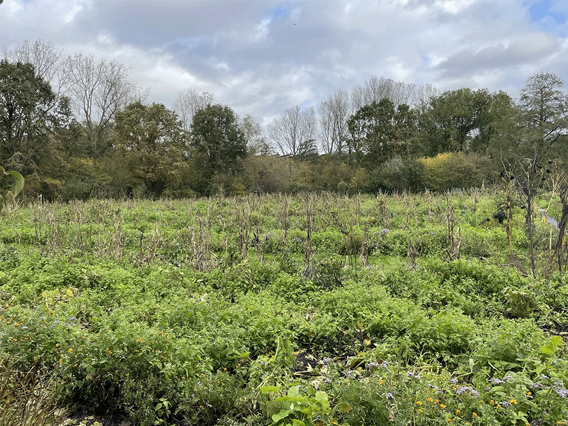
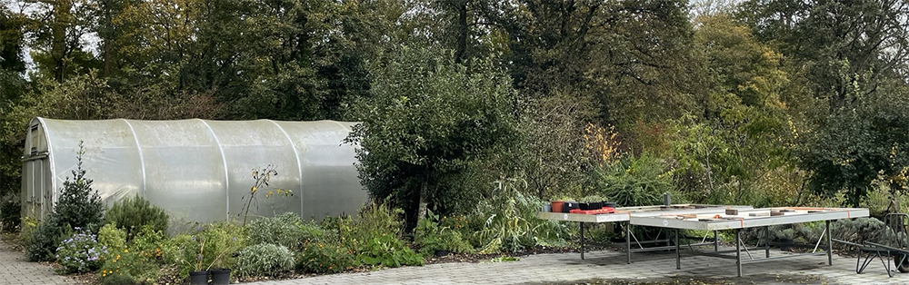
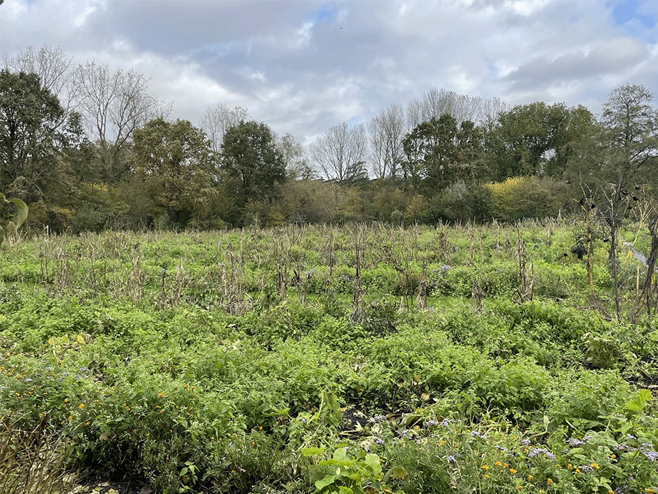
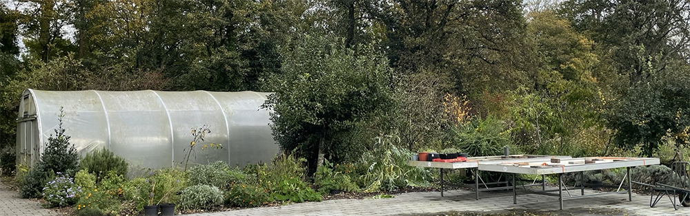

De moestuinen van west
 



De blijdestijn moestuin
De blijdestijn moestuin is in 1972 opricht in Amsterdam-West bij het Rembrandpark
Het park kan zo'n 650 tuinen bevatten en heeft daarnaast nog een kwekerij met daarop een kas voor het kweken van groenten en fruit die niet tegen de koude weer omstandigheden kunnen
De blijdestijn moestuin heeft sindkort ook een permacultuurtuin die in volle ontwikkeling is. Permacultuur is eigenlijk leren en samenhang tussen mens en natuur. Door samen te werken met de natuur hoopt men bodembevruchtheid en biodiveristeit een te kunnen trekken naar de tuinen.
informatie
De ridderbos moestuin
De Ridderbos moestuinen zijn in 1956 geopend in bos en lommer in Amsterdam west.De tuin dreigde eerst gesloten te worden vanwege de komst van een niewue spoorwegdijk. Maar door tussenkomst van de buurtbewoners is dit voorkomen en veranderd in een aanwist voor de buurt met verschillende natuurpaden
De Ridderbos tuinen staat bekend om zijn band met de buurtbewoners. Dit komt onder andere door de komst van vele buurtbewoners met een eigen tuintje daar en omdat ze in het verleden dus ervoor hebben gezorgd dat het tuin mocht blijven.
De ridderbos tuinen bevatten onder anderen bijenstallen met observatie kasten. En is er ook plek voor ouderen en mensen met een beperking om te kunnen werken in de tuinen staand of vanaf een rolstoel.